Last updated: 2026-03-17
Checks: 6 1
Knit directory: Data_Analysis/
This reproducible R Markdown analysis was created with workflowr (version 1.7.2). The Checks tab describes the reproducibility checks that were applied when the results were created. The Past versions tab lists the development history.
The R Markdown is untracked by Git. To know which version of the R
Markdown file created these results, you’ll want to first commit it to
the Git repo. If you’re still working on the analysis, you can ignore
this warning. When you’re finished, you can run
wflow_publish to commit the R Markdown file and build the
HTML.
Great job! The global environment was empty. Objects defined in the global environment can affect the analysis in your R Markdown file in unknown ways. For reproduciblity it’s best to always run the code in an empty environment.
The command set.seed(20260226) was run prior to running
the code in the R Markdown file. Setting a seed ensures that any results
that rely on randomness, e.g. subsampling or permutations, are
reproducible.
Great job! Recording the operating system, R version, and package versions is critical for reproducibility.
Nice! There were no cached chunks for this analysis, so you can be confident that you successfully produced the results during this run.
Great job! Using relative paths to the files within your workflowr project makes it easier to run your code on other machines.
Great! You are using Git for version control. Tracking code development and connecting the code version to the results is critical for reproducibility.
The results in this page were generated with repository version 090db42. See the Past versions tab to see a history of the changes made to the R Markdown and HTML files.
Note that you need to be careful to ensure that all relevant files for
the analysis have been committed to Git prior to generating the results
(you can use wflow_publish or
wflow_git_commit). workflowr only checks the R Markdown
file, but you know if there are other scripts or data files that it
depends on. Below is the status of the Git repository when the results
were generated:
Ignored files:
Ignored: .DS_Store
Ignored: .Rhistory
Ignored: .Rproj.user/
Ignored: analysis/.DS_Store
Ignored: analysis/.Rhistory
Ignored: analysis/figure/
Ignored: analysis/images/
Untracked files:
Untracked: DataMiningwithR/
Untracked: analysis/EDC_Huong.Rmd
Untracked: analysis/EDC_Jade.Rmd
Untracked: analysis/EDC_Script_Final.Rmd
Untracked: stats_python_theorie_a_pratique_duverier_djifack_zebaze/
Unstaged changes:
Modified: analysis/ML_2.Rmd
Modified: analysis/index.Rmd
Note that any generated files, e.g. HTML, png, CSS, etc., are not included in this status report because it is ok for generated content to have uncommitted changes.
There are no past versions. Publish this analysis with
wflow_publish() to start tracking its development.
Cette étude porte sur le jeu de données Gym Members Exercise
Dataset.
L’objectif est de suivre une démarche d’analyse structurée permettant
:
La stratégie retenue combine ainsi une approche descriptive, exploratoire, non supervisée et supervisée.
packages <- c("corrplot", "MASS", "rpart", "rpart.plot", "randomForest", "pls")
to_install <- packages[!packages %in% rownames(installed.packages())]
if (length(to_install) > 0) install.packages(to_install)
library(corrplot)
library(MASS)
library(rpart)
library(rpart.plot)
library(randomForest)
library(pls)Le fichier est importé depuis le répertoire de travail.
On vérifie ensuite sa structure, sa dimension et un premier résumé
global afin d’identifier la nature des variables.
# Adapter le chemin si besoin
setwd("/Users/thanhhuong/Downloads/M1/Etude de cas")
gym <- read.csv(
"gym_members_exercise_tracking.csv",
sep = ",",
dec = ".",
header = TRUE
)
str(gym)'data.frame': 973 obs. of 15 variables:
$ Age : int 56 46 32 25 38 56 36 40 28 28 ...
$ Gender : chr "Male" "Female" "Female" "Male" ...
$ Weight..kg. : num 88.3 74.9 68.1 53.2 46.1 ...
$ Height..m. : num 1.71 1.53 1.66 1.7 1.79 1.68 1.72 1.51 1.94 1.84 ...
$ Max_BPM : int 180 179 167 190 188 168 174 189 185 169 ...
$ Avg_BPM : int 157 151 122 164 158 156 169 141 127 136 ...
$ Resting_BPM : int 60 66 54 56 68 74 73 64 52 64 ...
$ Session_Duration..hours. : num 1.69 1.3 1.11 0.59 0.64 1.59 1.49 1.27 1.03 1.08 ...
$ Calories_Burned : num 1313 883 677 532 556 ...
$ Workout_Type : chr "Yoga" "HIIT" "Cardio" "Strength" ...
$ Fat_Percentage : num 12.6 33.9 33.4 28.8 29.2 15.5 21.3 30.6 28.9 29.7 ...
$ Water_Intake..liters. : num 3.5 2.1 2.3 2.1 2.8 2.7 2.3 1.9 2.6 2.7 ...
$ Workout_Frequency..days.week.: int 4 4 4 3 3 5 3 3 4 3 ...
$ Experience_Level : int 3 2 2 1 1 3 2 2 2 1 ...
$ BMI : num 30.2 32 24.7 18.4 14.4 ...dim(gym)[1] 973 15head(gym) Age Gender Weight..kg. Height..m. Max_BPM Avg_BPM Resting_BPM
1 56 Male 88.3 1.71 180 157 60
2 46 Female 74.9 1.53 179 151 66
3 32 Female 68.1 1.66 167 122 54
4 25 Male 53.2 1.70 190 164 56
5 38 Male 46.1 1.79 188 158 68
6 56 Female 58.0 1.68 168 156 74
Session_Duration..hours. Calories_Burned Workout_Type Fat_Percentage
1 1.69 1313 Yoga 12.6
2 1.30 883 HIIT 33.9
3 1.11 677 Cardio 33.4
4 0.59 532 Strength 28.8
5 0.64 556 Strength 29.2
6 1.59 1116 HIIT 15.5
Water_Intake..liters. Workout_Frequency..days.week. Experience_Level BMI
1 3.5 4 3 30.20
2 2.1 4 2 32.00
3 2.3 4 2 24.71
4 2.1 3 1 18.41
5 2.8 3 1 14.39
6 2.7 5 3 20.55summary(gym) Age Gender Weight..kg. Height..m.
Min. :18.00 Length:973 Min. : 40.00 Min. :1.500
1st Qu.:28.00 Class :character 1st Qu.: 58.10 1st Qu.:1.620
Median :40.00 Mode :character Median : 70.00 Median :1.710
Mean :38.68 Mean : 73.85 Mean :1.723
3rd Qu.:49.00 3rd Qu.: 86.00 3rd Qu.:1.800
Max. :59.00 Max. :129.90 Max. :2.000
Max_BPM Avg_BPM Resting_BPM Session_Duration..hours.
Min. :160.0 Min. :120.0 Min. :50.00 Min. :0.500
1st Qu.:170.0 1st Qu.:131.0 1st Qu.:56.00 1st Qu.:1.040
Median :180.0 Median :143.0 Median :62.00 Median :1.260
Mean :179.9 Mean :143.8 Mean :62.22 Mean :1.256
3rd Qu.:190.0 3rd Qu.:156.0 3rd Qu.:68.00 3rd Qu.:1.460
Max. :199.0 Max. :169.0 Max. :74.00 Max. :2.000
Calories_Burned Workout_Type Fat_Percentage Water_Intake..liters.
Min. : 303.0 Length:973 Min. :10.00 Min. :1.500
1st Qu.: 720.0 Class :character 1st Qu.:21.30 1st Qu.:2.200
Median : 893.0 Mode :character Median :26.20 Median :2.600
Mean : 905.4 Mean :24.98 Mean :2.627
3rd Qu.:1076.0 3rd Qu.:29.30 3rd Qu.:3.100
Max. :1783.0 Max. :35.00 Max. :3.700
Workout_Frequency..days.week. Experience_Level BMI
Min. :2.000 Min. :1.00 Min. :12.32
1st Qu.:3.000 1st Qu.:1.00 1st Qu.:20.11
Median :3.000 Median :2.00 Median :24.16
Mean :3.322 Mean :1.81 Mean :24.91
3rd Qu.:4.000 3rd Qu.:2.00 3rd Qu.:28.56
Max. :5.000 Max. :3.00 Max. :49.84 Certaines variables doivent être explicitement converties en facteurs afin d’être traitées correctement dans les analyses descriptives et les modèles supervisés.
gym$Gender <- as.factor(gym$Gender)
gym$Workout_Type <- as.factor(gym$Workout_Type)
gym$Experience_Level <- as.factor(gym$Experience_Level)Avant toute analyse, il est nécessaire de vérifier la qualité globale des données, notamment la présence de valeurs manquantes et de doublons.
na_counts <- colSums(is.na(gym))
dup_count <- sum(duplicated(gym))
na_counts Age Gender
0 0
Weight..kg. Height..m.
0 0
Max_BPM Avg_BPM
0 0
Resting_BPM Session_Duration..hours.
0 0
Calories_Burned Workout_Type
0 0
Fat_Percentage Water_Intake..liters.
0 0
Workout_Frequency..days.week. Experience_Level
0 0
BMI
0 dup_count[1] 0Les sorties précédentes permettent de confirmer si le jeu de données
nécessite un traitement complémentaire.
En l’absence de valeurs manquantes importantes ou de doublons, l’analyse
peut être poursuivie directement.
Le nettoyage ne se limite pas à supprimer des observations. Il consiste aussi à limiter les redondances entre variables.
Dans cette étude :
BMI est une variable dérivée de Weight et
Height et peut donc introduire une redondance ;Max_BPM et Resting_BPM semblent a priori
moins informatifs que Avg_BPM pour expliquer la dépense
calorique ;vars_quanti_full <- c(
"Age",
"Weight..kg.",
"Height..m.",
"Max_BPM",
"Avg_BPM",
"Resting_BPM",
"Session_Duration..hours.",
"Fat_Percentage",
"Water_Intake..liters.",
"Workout_Frequency..days.week.",
"BMI"
)
vars_quanti <- c(
"Age",
"Weight..kg.",
"Height..m.",
"Avg_BPM",
"Session_Duration..hours.",
"Fat_Percentage",
"Water_Intake..liters.",
"Workout_Frequency..days.week."
)
vars_quali <- c("Gender", "Workout_Type", "Experience_Level")
gym_quanti_full <- gym[, vars_quanti_full]
gym_quanti <- gym[, vars_quanti]
gym_quali <- gym[, vars_quali]
calories <- gym$Calories_BurnedLes corrélations suivantes servent à justifier le choix des variables conservées ou écartées.
corr_bpm <- cor(gym[, c("Max_BPM", "Avg_BPM", "Resting_BPM")])
corr_bpm_cal <- cor(gym[, c("Max_BPM", "Avg_BPM", "Resting_BPM", "Calories_Burned")])[, "Calories_Burned"]
corr_bmi <- cor(gym[, c("BMI", "Weight..kg.", "Height..m.")])
round(corr_bpm, 3) Max_BPM Avg_BPM Resting_BPM
Max_BPM 1.000 -0.04 0.037
Avg_BPM -0.040 1.00 0.060
Resting_BPM 0.037 0.06 1.000round(corr_bpm_cal, 3) Max_BPM Avg_BPM Resting_BPM Calories_Burned
0.002 0.340 0.017 1.000 round(corr_bmi, 3) BMI Weight..kg. Height..m.
BMI 1.000 0.853 -0.159
Weight..kg. 0.853 1.000 0.365
Height..m. -0.159 0.365 1.000Ces résultats permettent d’évaluer :
Calories_Burned ;BMI,
Weight et Height.Si BMI est fortement corrélé à ses composantes, il est
logique de ne pas l’inclure dans les analyses principales afin d’éviter
une information répétée.
Afin de réaliser des modèles de classification, on transforme la
variable continue Calories_Burned en trois classes de
niveau de dépense calorique : Faible,
Modérée et Haute, à partir des
terciles.
burned_cal <- quantile(
gym$Calories_Burned,
probs = c(0, 1/3, 2/3, 1),
na.rm = TRUE
)
gym$Classe_Calories <- cut(
gym$Calories_Burned,
breaks = burned_cal,
include.lowest = TRUE,
labels = c("Faible", "Moderee", "Haute")
)
gym$Classe_Calories <- as.factor(gym$Classe_Calories)
tab_classe <- table(gym$Classe_Calories)
prop_classe <- round(prop.table(tab_classe), 3)
tab_classe
Faible Moderee Haute
325 324 324 prop_classe
Faible Moderee Haute
0.334 0.333 0.333 La répartition obtenue permet de vérifier que les classes sont globalement équilibrées, ce qui est souhaitable pour les modèles de classification.
On commence par résumer les variables quantitatives retenues à l’aide des moyennes, écarts-types et statistiques usuelles.
moyennes <- round(apply(gym_quanti, 2, mean), 2)
ecarts_types <- round(apply(gym_quanti, 2, sd), 2)
resume_quanti <- summary(gym_quanti)
moyennes Age Weight..kg.
38.68 73.85
Height..m. Avg_BPM
1.72 143.77
Session_Duration..hours. Fat_Percentage
1.26 24.98
Water_Intake..liters. Workout_Frequency..days.week.
2.63 3.32 ecarts_types Age Weight..kg.
12.18 21.21
Height..m. Avg_BPM
0.13 14.35
Session_Duration..hours. Fat_Percentage
0.34 6.26
Water_Intake..liters. Workout_Frequency..days.week.
0.60 0.91 resume_quanti Age Weight..kg. Height..m. Avg_BPM
Min. :18.00 Min. : 40.00 Min. :1.500 Min. :120.0
1st Qu.:28.00 1st Qu.: 58.10 1st Qu.:1.620 1st Qu.:131.0
Median :40.00 Median : 70.00 Median :1.710 Median :143.0
Mean :38.68 Mean : 73.85 Mean :1.723 Mean :143.8
3rd Qu.:49.00 3rd Qu.: 86.00 3rd Qu.:1.800 3rd Qu.:156.0
Max. :59.00 Max. :129.90 Max. :2.000 Max. :169.0
Session_Duration..hours. Fat_Percentage Water_Intake..liters.
Min. :0.500 Min. :10.00 Min. :1.500
1st Qu.:1.040 1st Qu.:21.30 1st Qu.:2.200
Median :1.260 Median :26.20 Median :2.600
Mean :1.256 Mean :24.98 Mean :2.627
3rd Qu.:1.460 3rd Qu.:29.30 3rd Qu.:3.100
Max. :2.000 Max. :35.00 Max. :3.700
Workout_Frequency..days.week.
Min. :2.000
1st Qu.:3.000
Median :3.000
Mean :3.322
3rd Qu.:4.000
Max. :5.000 Cette étape permet d’apprécier l’ordre de grandeur des variables, leur dispersion et d’éventuelles asymétries ou valeurs extrêmes.
On examine ensuite la distribution des variables qualitatives du jeu de données.
table(gym$Gender)
Female Male
462 511 table(gym$Workout_Type)
Cardio HIIT Strength Yoga
255 221 258 239 table(gym$Experience_Level)
1 2 3
376 406 191 table(gym$Classe_Calories)
Faible Moderee Haute
325 324 324 Cette description donne une première idée de la composition de l’échantillon selon le sexe, le type d’entraînement, le niveau d’expérience et la classe de dépense calorique.
Les boxplots permettent d’identifier la dispersion et d’éventuelles observations atypiques.
par(mfrow = c(2, 2))
boxplot(gym$Calories_Burned, main = "Calories_Burned")
boxplot(gym$Session_Duration..hours., main = "Session_Duration")
boxplot(gym$Fat_Percentage, main = "Fat_Percentage")
boxplot(gym$Workout_Frequency..days.week., main = "Workout_Frequency")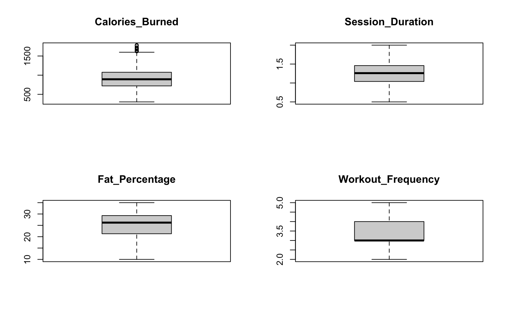
par(mfrow = c(1, 1))Ces graphiques sont utiles pour repérer rapidement les variables les plus hétérogènes et vérifier si certaines distributions présentent des valeurs extrêmes.
L’étude des corrélations permet de repérer les dépendances linéaires entre les variables quantitatives retenues.
cor_matrix <- cor(gym_quanti, use = "pairwise.complete.obs")
round(cor_matrix, 2) Age Weight..kg. Height..m. Avg_BPM
Age 1.00 -0.04 -0.03 0.04
Weight..kg. -0.04 1.00 0.37 0.01
Height..m. -0.03 0.37 1.00 -0.01
Avg_BPM 0.04 0.01 -0.01 1.00
Session_Duration..hours. -0.02 -0.01 -0.01 0.02
Fat_Percentage 0.00 -0.23 -0.24 -0.01
Water_Intake..liters. 0.04 0.39 0.39 0.00
Workout_Frequency..days.week. 0.01 -0.01 -0.01 -0.01
Session_Duration..hours. Fat_Percentage
Age -0.02 0.00
Weight..kg. -0.01 -0.23
Height..m. -0.01 -0.24
Avg_BPM 0.02 -0.01
Session_Duration..hours. 1.00 -0.58
Fat_Percentage -0.58 1.00
Water_Intake..liters. 0.28 -0.59
Workout_Frequency..days.week. 0.64 -0.54
Water_Intake..liters.
Age 0.04
Weight..kg. 0.39
Height..m. 0.39
Avg_BPM 0.00
Session_Duration..hours. 0.28
Fat_Percentage -0.59
Water_Intake..liters. 1.00
Workout_Frequency..days.week. 0.24
Workout_Frequency..days.week.
Age 0.01
Weight..kg. -0.01
Height..m. -0.01
Avg_BPM -0.01
Session_Duration..hours. 0.64
Fat_Percentage -0.54
Water_Intake..liters. 0.24
Workout_Frequency..days.week. 1.00corrplot(
cor_matrix,
method = "color",
tl.col = "black",
tl.cex = 0.7
)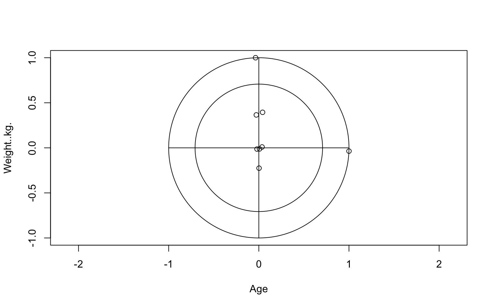
Une forte corrélation entre deux variables suggère qu’elles
véhiculent une information proche.
À l’inverse, des corrélations faibles traduisent des dimensions plus
indépendantes du comportement physique étudié.
On examine ici les liens entre les variables explicatives
quantitatives et Calories_Burned.
cor_target <- cor(
cbind(gym_quanti, Calories_Burned = gym$Calories_Burned),
use = "pairwise.complete.obs"
)
round(cor_target[, "Calories_Burned"], 2) Age Weight..kg.
-0.15 0.10
Height..m. Avg_BPM
0.09 0.34
Session_Duration..hours. Fat_Percentage
0.91 -0.60
Water_Intake..liters. Workout_Frequency..days.week.
0.36 0.58
Calories_Burned
1.00 Cette étape permet d’identifier les variables quantitatives les plus directement associées à la dépense calorique, ce qui sera utile pour l’interprétation des modèles prédictifs.
L’ACP est réalisée sur des variables quantitatives centrées-réduites, afin d’éviter qu’une variable à grande variance domine artificiellement l’analyse.
gymCR <- scale(gym_quanti, center = TRUE, scale = TRUE)
round(apply(gymCR, 2, mean), 5) Age Weight..kg.
0 0
Height..m. Avg_BPM
0 0
Session_Duration..hours. Fat_Percentage
0 0
Water_Intake..liters. Workout_Frequency..days.week.
0 0 round(apply(gymCR, 2, sd), 5) Age Weight..kg.
1 1
Height..m. Avg_BPM
1 1
Session_Duration..hours. Fat_Percentage
1 1
Water_Intake..liters. Workout_Frequency..days.week.
1 1 Les moyennes proches de 0 et les écarts-types proches de 1 confirment que la standardisation a bien été effectuée.
On utilise ici prcomp, plus stable numériquement que
princomp.
resAcpGym <- prcomp(gym_quanti, center = TRUE, scale. = TRUE)
scores_acp <- resAcpGym$x
vp <- resAcpGym$sdev^2
round(vp, 3)[1] 2.602 1.574 1.039 0.970 0.634 0.531 0.350 0.300round(vp / sum(vp) * 100, 2)[1] 32.52 19.68 12.99 12.12 7.92 6.64 4.37 3.76round(cumsum(vp) / sum(vp) * 100, 2)[1] 32.52 52.20 65.19 77.31 85.23 91.87 96.24 100.00Les valeurs propres et pourcentages de variance expliquée permettent de mesurer combien d’information est capturée par chaque composante principale.
Deux critères sont utilisés ici : le critère de Kaiser et le seuil de Saporta.
n <- nrow(gym_quanti)
p <- ncol(gym_quanti)
kaiser_n <- sum(vp > 1)
saporta_threshold <- 1 + 2 * sqrt((p - 1) / (n - 1))
saporta_n <- sum(vp > saporta_threshold)
kaiser_n[1] 3round(saporta_threshold, 3)[1] 1.17saporta_n[1] 2Le critère de Kaiser retient les axes dont la valeur propre est
supérieure à 1.
Le critère de Saporta est plus exigeant et permet parfois une sélection
plus prudente des dimensions réellement informatives.
par(mfrow = c(1, 2))
barplot(
vp,
main = "Valeurs propres",
ylab = "Valeur propre",
las = 2
)
abline(h = 1, col = "red", lty = 2)
plot(
vp, type = "b", pch = 19,
main = "Scree plot",
xlab = "Composante",
ylab = "Valeur propre"
)
abline(h = 1, col = "red", lty = 2)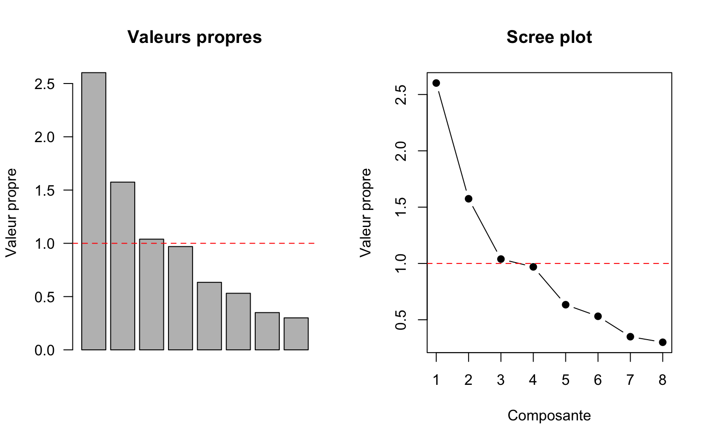
par(mfrow = c(1, 1))Le scree plot permet de visualiser le décrochement des valeurs propres et d’aider au choix du nombre d’axes à interpréter.
pct1 <- round(vp[1] / sum(vp) * 100, 2)
pct2 <- round(vp[2] / sum(vp) * 100, 2)
pct3 <- round(vp[3] / sum(vp) * 100, 2)
pct1[1] 32.52pct2[1] 19.68pct3[1] 12.99Les deux premiers axes expliquent ensemble 52.2 % de la variance totale, ce qui donne une idée de la qualité de la représentation plane de l’ACP.
On construit d’abord une fonction utilitaire pour colorer les individus selon une variable qualitative.
plot_acp_groups <- function(group_var, main_title) {
cols <- as.numeric(group_var)
plot(
scores_acp[, 1], scores_acp[, 2],
main = main_title,
xlab = paste0("Axe 1 (", pct1, "%)"),
ylab = paste0("Axe 2 (", pct2, "%)"),
col = cols,
pch = 16
)
abline(h = 0, v = 0, lty = 2, col = "grey")
legend(
"topright",
legend = levels(as.factor(group_var)),
col = 1:length(levels(as.factor(group_var))),
pch = 16,
bty = "n",
cex = 0.8
)
}par(mfrow = c(1, 2))
plot(
scores_acp[, 1], scores_acp[, 2],
main = "ACP - Individus",
xlab = paste0("Axe 1 (", pct1, "%)"),
ylab = paste0("Axe 2 (", pct2, "%)"),
pch = 16
)
abline(h = 0, v = 0, lty = 2, col = "grey")
plot_acp_groups(gym$Gender, "ACP - Individus colorés par Gender")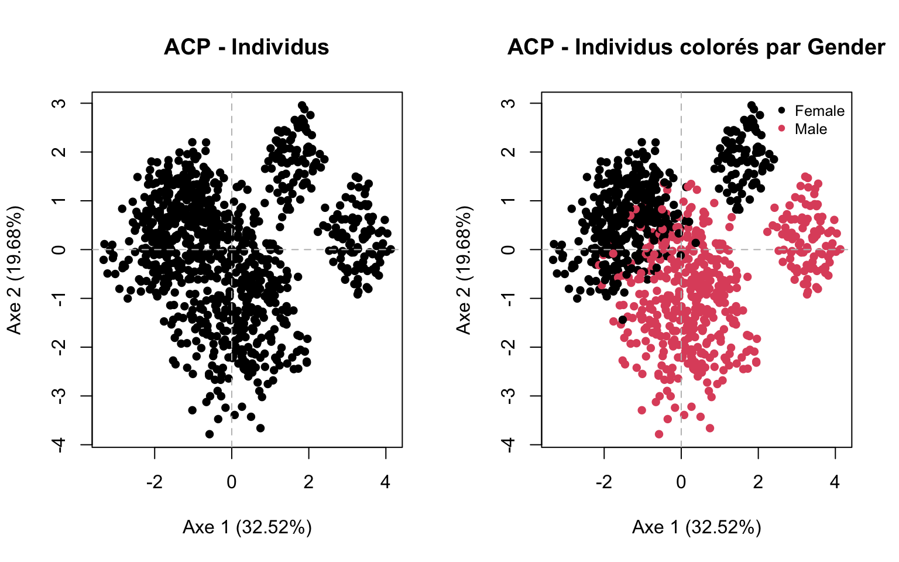
par(mfrow = c(1, 1))
plot_acp_groups(gym$Workout_Type, "ACP - Individus colorés par Workout_Type")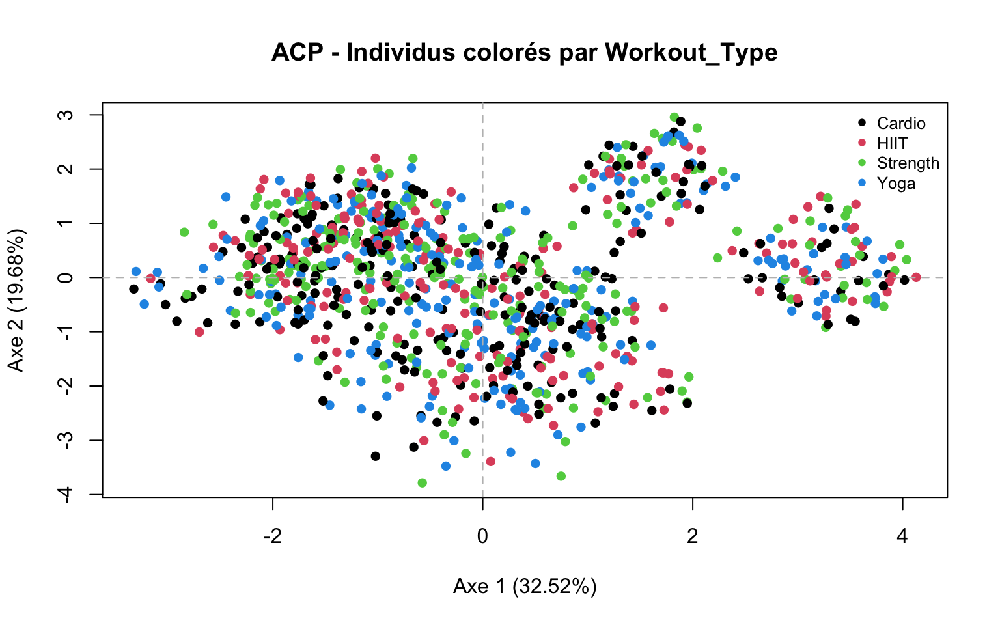
plot_acp_groups(gym$Experience_Level, "ACP - Individus colorés par Experience_Level")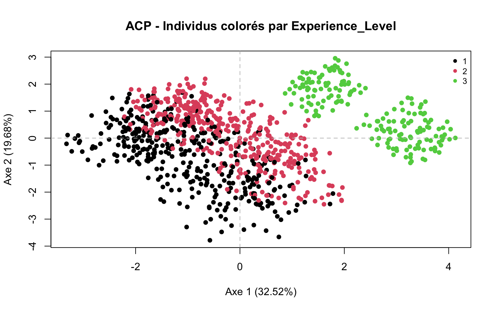
plot_acp_groups(gym$Classe_Calories, "ACP - Individus colorés par Classe_Calories")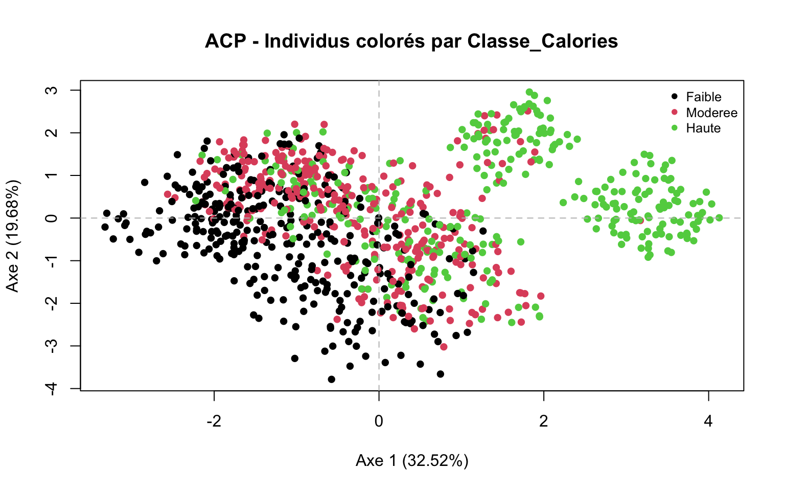
Ces graphiques permettent d’observer si certains groupes se
distinguent visuellement sur les premiers axes de l’ACP.
Une séparation partielle ou nette suggère que la structure
multidimensionnelle des données est liée aux variables qualitatives
étudiées.
Le cercle des corrélations permet d’interpréter les axes en fonction des variables quantitatives.
corvar <- cor(gymCR, scores_acp[, 1:2])
plot(
corvar[, 1], corvar[, 2],
xlim = c(-1, 1), ylim = c(-1, 1),
xlab = paste0("Axe 1 (", pct1, "%)"),
ylab = paste0("Axe 2 (", pct2, "%)"),
main = "Cercle des corrélations",
type = "n", asp = 1
)
symbols(0, 0, circles = 1, inches = FALSE, add = TRUE, fg = "blue", lty = 2)
abline(h = 0, v = 0, lty = 2, col = "grey")
text(
corvar[, 1], corvar[, 2],
labels = colnames(gym_quanti),
col = "red",
cex = 0.8
)
arrows(
0, 0,
corvar[, 1] * 0.95,
corvar[, 2] * 0.95,
length = 0.1,
angle = 15,
code = 2
)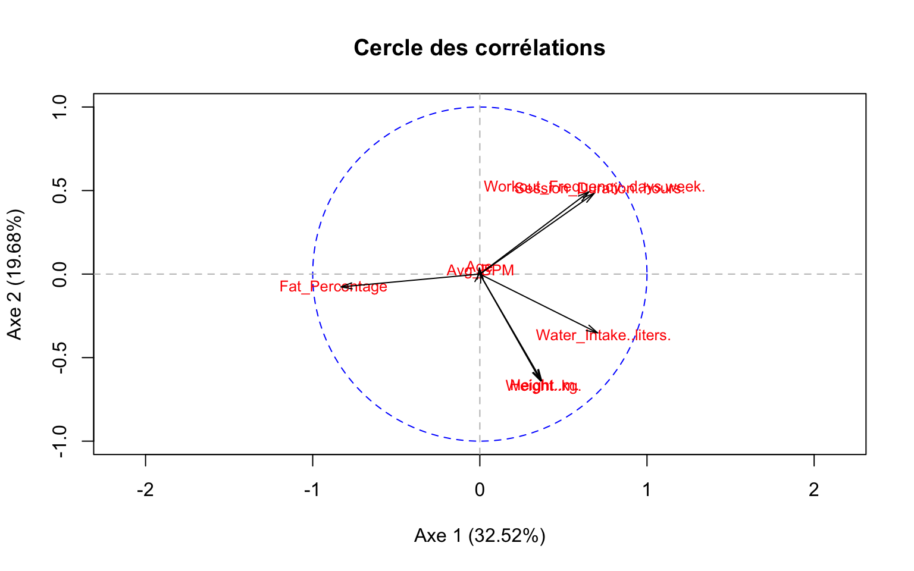
round(corvar, 3) PC1 PC2
Age -0.003 0.039
Weight..kg. 0.383 -0.673
Height..m. 0.389 -0.670
Avg_BPM 0.004 0.016
Session_Duration..hours. 0.719 0.508
Fat_Percentage -0.875 -0.081
Water_Intake..liters. 0.741 -0.370
Workout_Frequency..days.week. 0.687 0.519Les variables proches du cercle et fortement projetées sur un axe
contribuent davantage à la définition de cet axe.
Des variables orientées dans la même direction sont positivement
associées, tandis que des directions opposées traduisent une
opposition.
La CAH est réalisée sur les trois premiers axes de l’ACP afin de résumer l’information essentielle tout en réduisant le bruit.
scores_cah <- scores_acp[, 1:3]
d_acp <- dist(scores_cah, method = "euclidean")
cah_ward <- hclust(d_acp, method = "ward.D2")
plot(
cah_ward,
hang = -1,
main = "CAH sur scores ACP - Ward.D2",
sub = "",
xlab = ""
)
rect.hclust(cah_ward, k = 3, border = "red")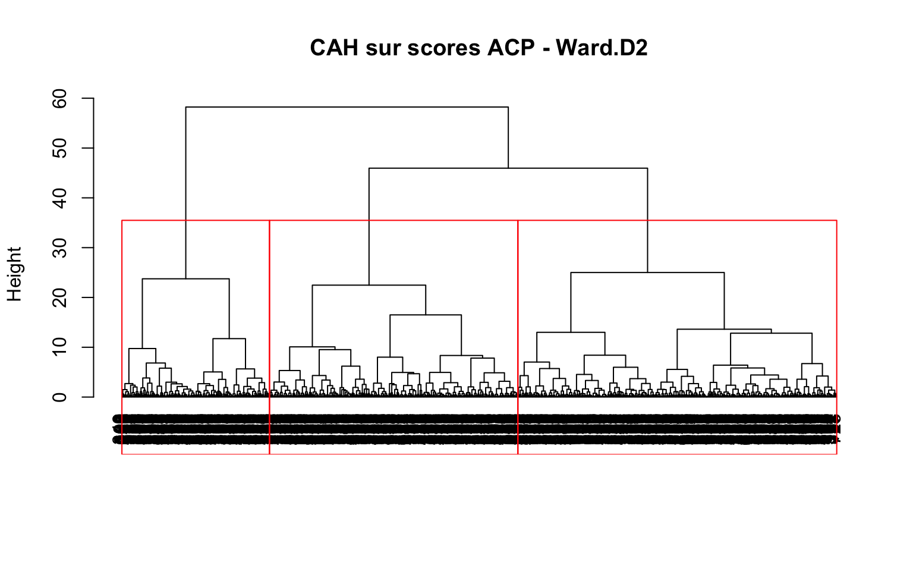
groupes_cah <- cutree(cah_ward, k = 3)
gym$Cluster_CAH <- as.factor(groupes_cah)
table(gym$Cluster_CAH)
1 2 3
201 434 338 Le dendrogramme permet d’identifier une partition en groupes
relativement homogènes.
Ici, on retient une solution à 3 classes.
plot(
scores_acp[, 1], scores_acp[, 2],
xlab = paste0("Axe 1 (", pct1, "%)"),
ylab = paste0("Axe 2 (", pct2, "%)"),
col = gym$Cluster_CAH,
pch = 19,
cex = 0.7,
main = "Groupes CAH sur le plan 1-2 de l'ACP"
)
abline(h = 0, v = 0, lty = 2, col = "grey")
legend(
"topright",
legend = levels(gym$Cluster_CAH),
col = 1:length(levels(gym$Cluster_CAH)),
pch = 19,
bty = "n"
)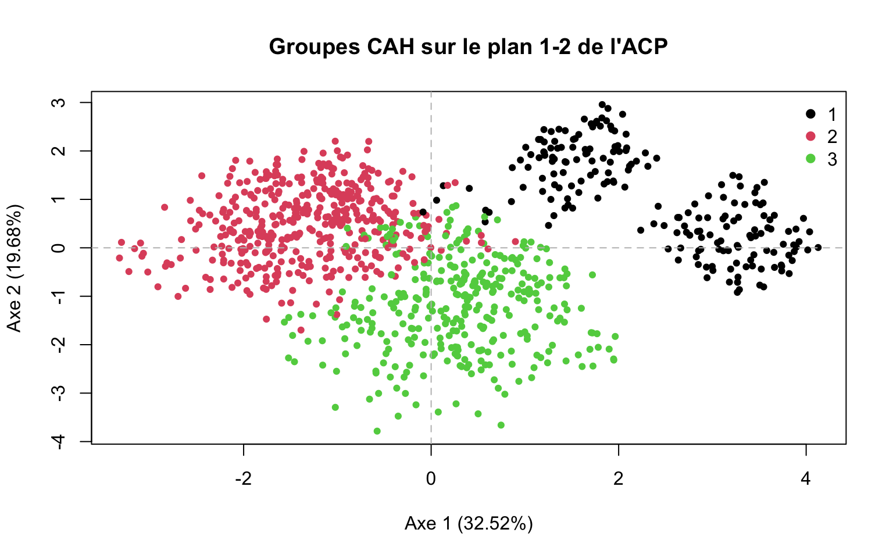
La représentation sur le plan factoriel aide à visualiser la séparation entre les groupes construits par la CAH.
aggregate(gym_quanti, by = list(Cluster = gym$Cluster_CAH), mean) Cluster Age Weight..kg. Height..m. Avg_BPM Session_Duration..hours.
1 1 38.20398 72.92289 1.723035 142.8109 1.741045
2 2 38.17051 61.09171 1.654562 143.3756 1.122880
3 3 39.62722 90.79675 1.809645 144.8373 1.139704
Fat_Percentage Water_Intake..liters. Workout_Frequency..days.week.
1 15.19353 3.103483 4.507463
2 29.36659 2.162673 3.004608
3 25.15799 2.938757 3.023669table(gym$Cluster_CAH, gym$Gender)
Female Male
1 92 109
2 356 78
3 14 324table(gym$Cluster_CAH, gym$Workout_Type)
Cardio HIIT Strength Yoga
1 49 50 48 54
2 113 100 123 98
3 93 71 87 87table(gym$Cluster_CAH, gym$Experience_Level)
1 2 3
1 0 10 191
2 217 217 0
3 159 179 0table(gym$Cluster_CAH, gym$Classe_Calories)
Faible Moderee Haute
1 0 24 177
2 208 171 55
3 117 129 92L’étude des moyennes et des tableaux croisés permet d’interpréter
chaque cluster :
certains groupes peuvent par exemple correspondre à des individus plus
endurants, plus intensifs, ou à plus forte dépense calorique.
On fixe une graine aléatoire pour garantir la reproductibilité, puis on réalise un découpage 70 % apprentissage / 30 % test.
set.seed(123)
vars_model_class <- c(vars_quanti, vars_quali, "Classe_Calories")
vars_model_reg <- c(vars_quanti, vars_quali, "Calories_Burned")
data_class <- gym[, vars_model_class]
data_reg <- gym[, vars_model_reg]
data_lda <- gym[, c(vars_quanti, "Classe_Calories")]
n_all <- nrow(gym)
index_train <- sample(1:n_all, size = floor(0.7 * n_all))
index_test <- setdiff(1:n_all, index_train)
train_class <- data_class[index_train, ]
test_class <- data_class[index_test, ]
train_reg <- data_reg[index_train, ]
test_reg <- data_reg[index_test, ]
train_lda <- data_lda[index_train, ]
test_lda <- data_lda[index_test, ]Ce découpage permet d’évaluer les performances des modèles sur des données non utilisées pendant l’apprentissage.
Classe_CaloriesLa LDA est ici appliquée uniquement aux variables quantitatives retenues.
lda_classe <- lda(Classe_Calories ~ ., data = train_lda)
pred_lda <- predict(lda_classe, newdata = test_lda)$class
tab_lda <- table(Observe = test_lda$Classe_Calories, Pred = pred_lda)
acc_lda <- mean(pred_lda == test_lda$Classe_Calories)
tab_lda Pred
Observe Faible Moderee Haute
Faible 87 17 0
Moderee 4 93 0
Haute 0 21 70round(acc_lda, 4)[1] 0.8562La matrice de confusion permet d’identifier quelles classes sont les
mieux reconnues.
L’accuracy mesure la proportion globale de bonnes classifications sur
l’échantillon test.
Le modèle CART est d’abord construit de manière large, puis élagué selon la règle du 1-SE pour limiter le surapprentissage.
cart_full <- rpart(
Classe_Calories ~ .,
data = train_class,
method = "class",
control = rpart.control(cp = 0.001, minsplit = 20, xval = 10)
)
printcp(cart_full)
Classification tree:
rpart(formula = Classe_Calories ~ ., data = train_class, method = "class",
control = rpart.control(cp = 0.001, minsplit = 20, xval = 10))
Variables actually used in tree construction:
[1] Age Avg_BPM Gender
[4] Height..m. Session_Duration..hours.
Root node error: 448/681 = 0.65786
n= 681
CP nsplit rel error xerror xstd
1 0.4419643 0 1.00000 1.06696 0.026645
2 0.1104911 1 0.55804 0.56250 0.028124
3 0.0368304 3 0.33705 0.32143 0.023786
4 0.0212054 5 0.26339 0.29018 0.022893
5 0.0178571 7 0.22098 0.29464 0.023026
6 0.0100446 9 0.18527 0.25446 0.021747
7 0.0044643 13 0.14509 0.23661 0.021117
8 0.0010000 15 0.13616 0.23884 0.021198plotcp(cart_full)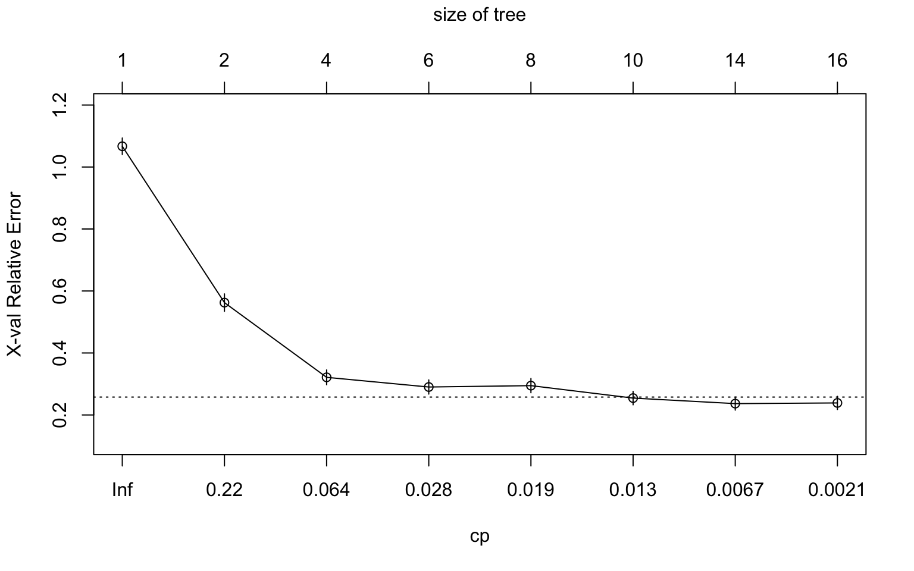
cptab_class <- cart_full$cptable
i_min_class <- which.min(cptab_class[, "xerror"])
xerr_min_class <- cptab_class[i_min_class, "xerror"]
xstd_min_class <- cptab_class[i_min_class, "xstd"]
i_1se_class <- min(which(cptab_class[, "xerror"] <= xerr_min_class + xstd_min_class))
cp_1se_class <- cptab_class[i_1se_class, "CP"]
cart_classe <- prune(cart_full, cp = cp_1se_class)
rpart.plot(
cart_classe,
type = 2,
extra = 104,
fallen.leaves = TRUE,
main = "CART élagué - Classe de dépense calorique"
)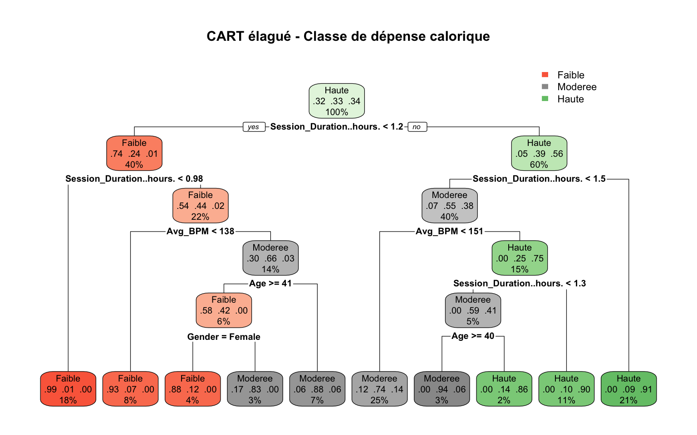
pred_cart <- predict(cart_classe, newdata = test_class, type = "class")
tab_cart <- table(Observe = test_class$Classe_Calories, Pred = pred_cart)
acc_cart <- mean(pred_cart == test_class$Classe_Calories)
tab_cart Pred
Observe Faible Moderee Haute
Faible 91 13 0
Moderee 4 81 12
Haute 0 9 82round(acc_cart, 4)[1] 0.8699L’intérêt de CART est son caractère facilement interprétable.
Les variables apparaissant haut dans l’arbre sont souvent les plus
discriminantes pour la classification.
La Random Forest agrège un grand nombre d’arbres et fournit généralement de meilleures performances prédictives qu’un arbre unique.
rf_classe <- randomForest(
Classe_Calories ~ .,
data = train_class,
ntree = 500,
importance = TRUE
)
rf_classe
Call:
randomForest(formula = Classe_Calories ~ ., data = train_class, ntree = 500, importance = TRUE)
Type of random forest: classification
Number of trees: 500
No. of variables tried at each split: 3
OOB estimate of error rate: 10.87%
Confusion matrix:
Faible Moderee Haute class.error
Faible 204 17 0 0.07692308
Moderee 17 196 14 0.13656388
Haute 0 26 207 0.11158798plot(rf_classe, main = "Erreur OOB - Random Forest")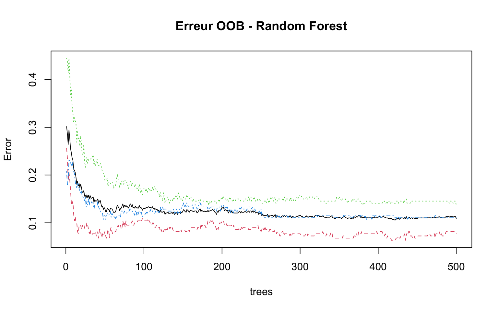
importance(rf_classe) Faible Moderee Haute
Age 14.24612919 11.034336 10.314037
Weight..kg. 4.34640045 6.205177 7.107893
Height..m. -0.09028489 4.780210 1.226055
Avg_BPM 35.58544044 42.837039 44.883199
Session_Duration..hours. 110.56277558 47.900553 37.769956
Fat_Percentage 16.63183894 10.656428 17.772128
Water_Intake..liters. 6.95958574 4.752977 11.281616
Workout_Frequency..days.week. 11.06853511 1.015431 6.657034
Gender 8.79852353 9.976162 7.481463
Workout_Type 0.49964259 -1.621269 -1.112249
Experience_Level 19.02320551 9.774251 16.325260
MeanDecreaseAccuracy MeanDecreaseGini
Age 18.912204 30.843254
Weight..kg. 9.976991 25.896177
Height..m. 4.170371 20.557853
Avg_BPM 61.260604 71.551092
Session_Duration..hours. 79.785482 163.051500
Fat_Percentage 20.403000 48.021588
Water_Intake..liters. 12.764773 24.664958
Workout_Frequency..days.week. 10.081366 15.326898
Gender 15.002862 5.437534
Workout_Type -1.401340 11.854973
Experience_Level 19.716666 35.566034varImpPlot(rf_classe, main = "Importance des variables - Random Forest")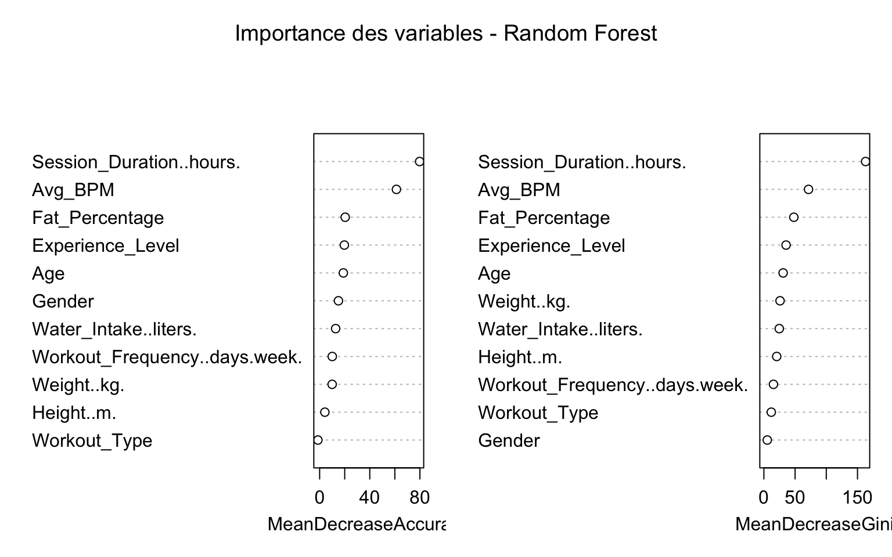
pred_rf <- predict(rf_classe, newdata = test_class, type = "class")
tab_rf <- table(Observe = test_class$Classe_Calories, Pred = pred_rf)
acc_rf <- mean(pred_rf == test_class$Classe_Calories)
tab_rf Pred
Observe Faible Moderee Haute
Faible 97 7 0
Moderee 8 79 10
Haute 0 10 81round(acc_rf, 4)[1] 0.8801L’erreur OOB fournit une estimation interne de la performance du
modèle.
Le graphique d’importance permet d’identifier les variables les plus
utiles pour prédire la classe de dépense calorique.
Calories_BurnedComme pour la classification, on construit d’abord un arbre large puis on l’élague.
cart_reg_full <- rpart(
Calories_Burned ~ .,
data = train_reg,
method = "anova",
control = rpart.control(cp = 0.001, minsplit = 20, xval = 10)
)
printcp(cart_reg_full)
Regression tree:
rpart(formula = Calories_Burned ~ ., data = train_reg, method = "anova",
control = rpart.control(cp = 0.001, minsplit = 20, xval = 10))
Variables actually used in tree construction:
[1] Age Avg_BPM Fat_Percentage
[4] Gender Height..m. Session_Duration..hours.
Root node error: 51301313/681 = 75332
n= 681
CP nsplit rel error xerror xstd
1 0.5337410 0 1.000000 1.004655 0.0535484
2 0.1270168 1 0.466259 0.478904 0.0265510
3 0.1053696 2 0.339242 0.399972 0.0222448
4 0.0379654 3 0.233873 0.249397 0.0140668
5 0.0330686 4 0.195907 0.226267 0.0131429
6 0.0181385 5 0.162839 0.181029 0.0095658
7 0.0133361 6 0.144700 0.162518 0.0091402
8 0.0107623 7 0.131364 0.154099 0.0085044
9 0.0076666 8 0.120602 0.144270 0.0079467
10 0.0073461 9 0.112935 0.136747 0.0075426
11 0.0065380 10 0.105589 0.130787 0.0072791
12 0.0063927 11 0.099051 0.130150 0.0072540
13 0.0045347 12 0.092658 0.125310 0.0070936
14 0.0035874 13 0.088124 0.116386 0.0064117
15 0.0030905 14 0.084536 0.116569 0.0064046
16 0.0029467 15 0.081446 0.114279 0.0063347
17 0.0027969 16 0.078499 0.112606 0.0062770
18 0.0027849 17 0.075702 0.111910 0.0062329
19 0.0027368 18 0.072917 0.111052 0.0061764
20 0.0024567 19 0.070180 0.107008 0.0059035
21 0.0023265 20 0.067724 0.105118 0.0058449
22 0.0022489 21 0.065397 0.104446 0.0058218
23 0.0021657 22 0.063148 0.104034 0.0058475
24 0.0020719 23 0.060983 0.102128 0.0057320
25 0.0019747 24 0.058911 0.101109 0.0057255
26 0.0017626 25 0.056936 0.099965 0.0056976
27 0.0015948 26 0.055173 0.097424 0.0055735
28 0.0015946 27 0.053579 0.096628 0.0055519
29 0.0014661 28 0.051984 0.094928 0.0054552
30 0.0013862 29 0.050518 0.092535 0.0053700
31 0.0012093 30 0.049132 0.090961 0.0053154
32 0.0011505 31 0.047922 0.089716 0.0051526
33 0.0010459 32 0.046772 0.087639 0.0050677
34 0.0010041 33 0.045726 0.085926 0.0050045
35 0.0010000 34 0.044722 0.085435 0.0049774plotcp(cart_reg_full)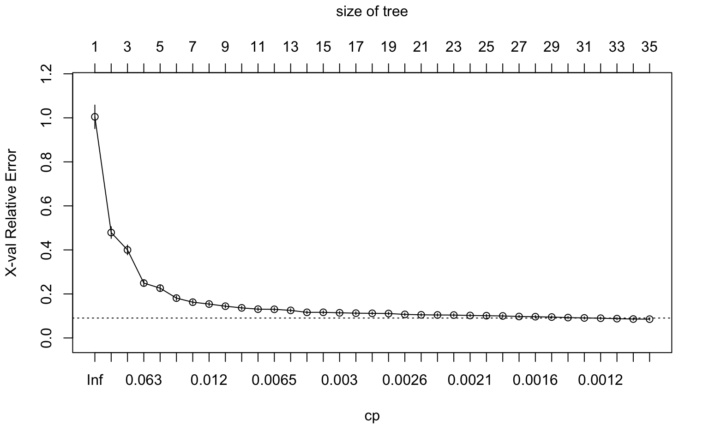
cptab_reg <- cart_reg_full$cptable
i_min_reg <- which.min(cptab_reg[, "xerror"])
xerr_min_reg <- cptab_reg[i_min_reg, "xerror"]
xstd_min_reg <- cptab_reg[i_min_reg, "xstd"]
i_1se_reg <- min(which(cptab_reg[, "xerror"] <= xerr_min_reg + xstd_min_reg))
cp_1se_reg <- cptab_reg[i_1se_reg, "CP"]
cart_reg <- prune(cart_reg_full, cp = cp_1se_reg)
rpart.plot(
cart_reg,
type = 2,
extra = 101,
fallen.leaves = TRUE,
main = "CART régression - Calories_Burned"
)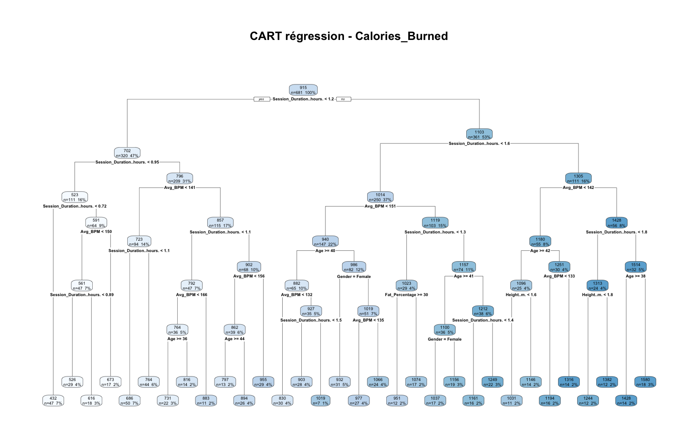
pred_cart_reg <- predict(cart_reg, newdata = test_reg)
r2_cart_reg <- cor(test_reg$Calories_Burned, pred_cart_reg)^2
rmse_cart_reg <- sqrt(mean((test_reg$Calories_Burned - pred_cart_reg)^2))
round(r2_cart_reg, 4)[1] 0.9121round(rmse_cart_reg, 2)[1] 79.16Le coefficient de détermination \(R^2\) évalue la part de variabilité expliquée sur l’échantillon test, tandis que le RMSE mesure l’erreur moyenne de prédiction en unités de calories.
La régression PLS est particulièrement utile lorsque les variables quantitatives sont potentiellement corrélées entre elles.
data_pls <- gym[, c(vars_quanti, "Calories_Burned")]
train_pls <- data_pls[index_train, ]
test_pls <- data_pls[index_test, ]
modele_pls <- plsr(
Calories_Burned ~ .,
data = train_pls,
scale = TRUE,
validation = "CV"
)
summary(modele_pls)Data: X dimension: 681 8
Y dimension: 681 1
Fit method: kernelpls
Number of components considered: 8
VALIDATION: RMSEP
Cross-validated using 10 random segments.
(Intercept) 1 comps 2 comps 3 comps 4 comps 5 comps 6 comps
CV 274.9 125.8 79.01 56.90 47.00 46.85 46.79
adjCV 274.9 125.8 78.90 56.83 46.94 46.80 46.75
7 comps 8 comps
CV 46.80 46.80
adjCV 46.76 46.76
TRAINING: % variance explained
1 comps 2 comps 3 comps 4 comps 5 comps 6 comps 7 comps
X 30.25 45.48 58.33 68.73 75.72 81.12 88.57
Calories_Burned 79.30 92.01 95.86 97.17 97.19 97.19 97.19
8 comps
X 100.00
Calories_Burned 97.19plot(
RMSEP(modele_pls, estimate = "CV"),
legendpos = "topright",
main = "RMSEP - PLS"
)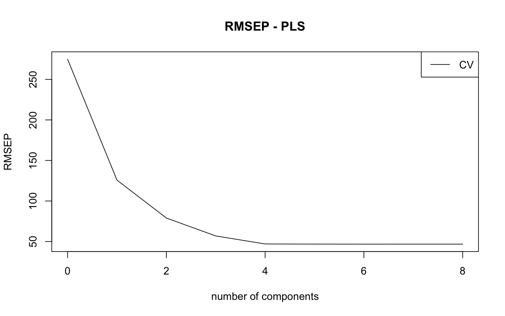
rmsep_cv <- drop(RMSEP(modele_pls, estimate = "CV")$val[1, 1, -1])
n_comp_opt <- which.min(rmsep_cv)
n_comp_opt6 comps
6 pred_pls <- predict(modele_pls, newdata = test_pls, ncomp = n_comp_opt)
pred_pls <- as.vector(pred_pls)
r2_pls <- cor(test_pls$Calories_Burned, pred_pls)^2
rmse_pls <- sqrt(mean((test_pls$Calories_Burned - pred_pls)^2))
round(r2_pls, 4)[1] 0.9683round(rmse_pls, 2)[1] 47.49Le nombre optimal de composantes est choisi automatiquement à partir
du RMSEP en validation croisée.
La comparaison du \(R^2\) et du RMSE
avec ceux de CART permet de déterminer le modèle de régression le plus
performant.
resume_classification <- data.frame( Modele = c("LDA", "CART classification", "Random Forest"), Accuracy_test = c(acc_lda, acc_cart, acc_rf) )
resume_classification Modele Accuracy_test
1 LDA 0.8561644
2 CART classification 0.8698630
3 Random Forest 0.8801370resume_regression <- data.frame(
Modele = c("CART régression", "PLS"),
R2_test = c(r2_cart_reg, r2_pls),
RMSE_test = c(rmse_cart_reg, rmse_pls)
)
data.frame(
Modele = resume_regression$Modele,
R2_test = round(resume_regression$R2_test, 4),
RMSE_test = round(resume_regression$RMSE_test, 2)
) Modele R2_test RMSE_test
1 CART régression 0.9121 79.16
2 PLS 0.9683 47.49Enfin, les modèles supervisés ont permis d’évaluer la capacité prédictive des variables étudiées :
Classe_Calories) ;Calories_Burned.Le modèle de classification le plus performant est celui dont l’accuracy test est la plus élevée, tandis que pour la régression, le meilleur compromis correspond à un R² élevé et un RMSE faible.
sessionInfo()R version 4.5.3 (2026-03-11)
Platform: aarch64-apple-darwin20
Running under: macOS Ventura 13.6.3
Matrix products: default
BLAS: /Library/Frameworks/R.framework/Versions/4.5-arm64/Resources/lib/libRblas.0.dylib
LAPACK: /Library/Frameworks/R.framework/Versions/4.5-arm64/Resources/lib/libRlapack.dylib; LAPACK version 3.12.1
locale:
[1] en_US.UTF-8/en_US.UTF-8/en_US.UTF-8/C/en_US.UTF-8/en_US.UTF-8
time zone: Europe/Paris
tzcode source: internal
attached base packages:
[1] stats graphics grDevices utils datasets methods base
other attached packages:
[1] pls_2.9-0 randomForest_4.7-1.2 rpart.plot_3.1.4
[4] rpart_4.1.24 MASS_7.3-65 corrplot_0.95
loaded via a namespace (and not attached):
[1] jsonlite_2.0.0 compiler_4.5.3 promises_1.5.0 Rcpp_1.1.1
[5] stringr_1.6.0 git2r_0.36.2 later_1.4.8 jquerylib_0.1.4
[9] yaml_2.3.12 fastmap_1.2.0 R6_2.6.1 workflowr_1.7.2
[13] knitr_1.51 tibble_3.3.1 rprojroot_2.1.1 bslib_0.10.0
[17] pillar_1.11.1 rlang_1.1.7 cachem_1.1.0 stringi_1.8.7
[21] httpuv_1.6.16 xfun_0.56 fs_1.6.7 sass_0.4.10
[25] otel_0.2.0 cli_3.6.5 magrittr_2.0.4 digest_0.6.39
[29] rstudioapi_0.18.0 lifecycle_1.0.5 vctrs_0.7.1 evaluate_1.0.5
[33] glue_1.8.0 rmarkdown_2.30 tools_4.5.3 pkgconfig_2.0.3
[37] htmltools_0.5.9